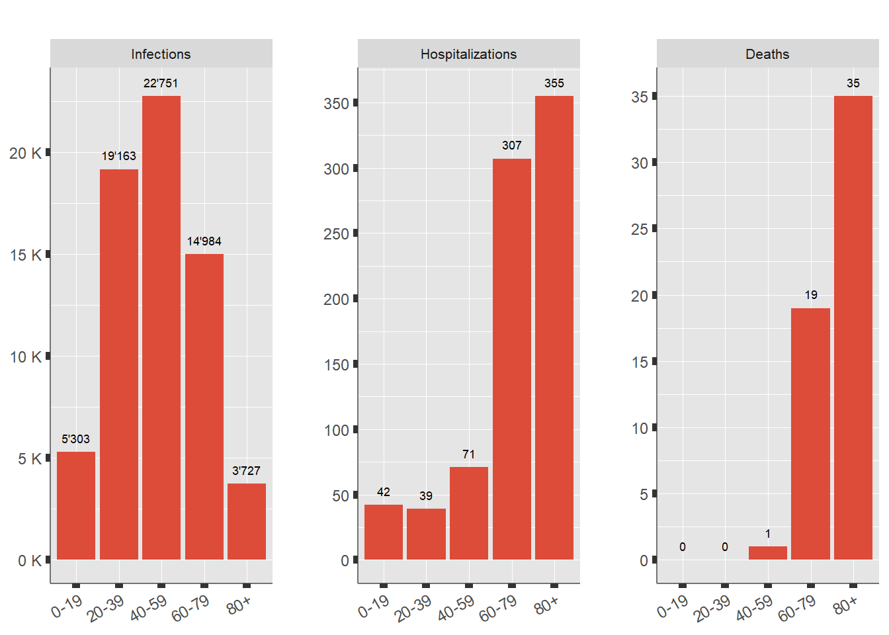
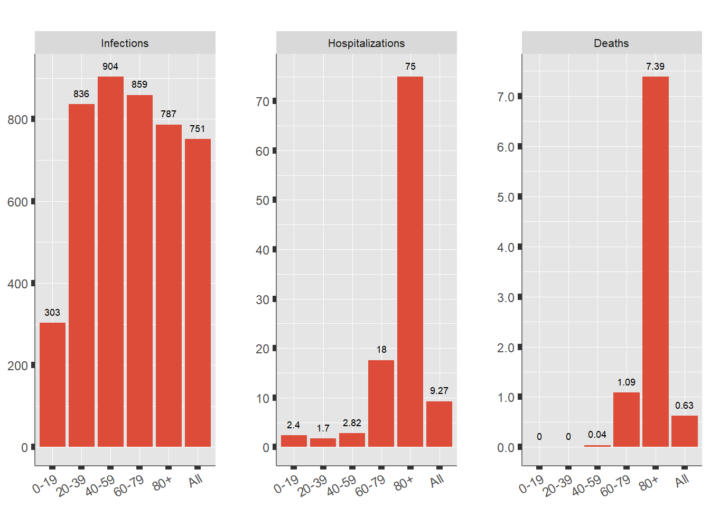

Vaccination breakthroughs in Switzerland
This is a Quarto website.
To learn more about Quarto websites visit https://quarto.org/docs/websites.
Since May 2020 Mirai Solutions is showing a dashboard on our gallery that contains a global view of the COVID-19 Pandemic with a further split by continent and country. We use publicly available data from the COVID-19 Data Hub, a great open source project providing a unified data set put together from numerous official local sources from all over the world.
In October and December 2021 we published 2 articles “A closer look at Vaccination breakthroughs in Switzerland” and “A 2nd look at Vaccination breakthroughs in Switzerland”, where we showed how to read data from the Swiss Federal Office for Public Health (BAG) in R, and illustrated the difference in Hospitalizations and Deaths between Vaccinated and Unvaccinated during the weeks in October and December.
Here we provide a live update to these articles deployed to shinyapps.io that will always show the latest data from BAG.
Reading BAG data
To see how we read BAG data in R please refer to the previous article.
We are interested in the weekly BAG reports about vaccination breakthroughs occurred in the last 4 weeks for different age classes. See data documentation and our source: opendata.swiss.
The data documentation makes us aware of the following restrictions and warnings about the collected data:
- During the vaccination campaign the populations of “Vaccinated” and “Unvaccinated” changed, i.e. the vaccinated population has slightly increased.
- Many infected people have “Unknown” vaccination status, therefore this source has been disabled by BAG, while a more complete information is available for Hospitalized and Deaths cases.
To solve the former problem (1.) we will use the average of the “Vaccinated” an “Unvaccinated” population sizes across the month.
As of Today (2023-07-14) the 4 last weeks considered are: 22-W-32, 22-W-33, 22-W-34, 22-W-35 (YY-W-Week Number), i.e. in the interval from 2022-08-05 to 2022-09-02.
The age categories have been redefined again as: 0-19, 20-39, 40-59, 60-79, 80+.
Last 4 weeks Cases and Vaccination
The current situation of the last 4 weeks as of 2022-09-02, i.e. how the infections, hospitalizations and deaths occurred across the age classes in absolute terms is shown below. Overall during this period Switzerland has registered 65’944 infections, 814 hospitalizations and 55 deaths.
Figure 1 see past 4 weeks cases-hospitalizations and deaths.
To account for different distribution of the population in the Age Classes consider the Incidence over 100’000 inhabitants:

Infections happen more frequently in younger age classes (at least in absolute terms) while Hospitalizations and Deaths are more common among the older ones.
Current Vaccination Status
The current vaccination status per age group as of 2022-09-02 is shown below. The “Fully Vaccinated” population is split according to the occurred injection of the Booster dose.
68.74% of the Swiss population is fully vaccinated (2 doses), 69.7% has received at least one dose, while 43.9% has received the booster dose.
When making a comparison between the Vaccinated and Unvaccinated it is worth first highlighting the differences between the 2 populations that would bias such comparison.
The biggest difference is the younger age of the “Unvaccinated” population, less likely to be impacted by Covid-19. For this reason the data are grouped in Age Classes, even within the same class, there can be are other differences to consider that may make a population more or less inclined to infection, and hence to hospitalizations. Measures in the Age Class “All” have to be age-adjusted.
Further bias is introduced by the fact that “Unvaccinated” may have recovered from Covid and therefore have a protection. Unfortunately we cannot extract relevant information from BAG that would allow us to exclude the already Infected from the “Unvaccinated” population. We can show here the % of total contagion in the global population and warn the readers that a “small” % of the “Unvaccinated” is NOT unprotected (leading to underestimation of the positive effect of vaccination).
| Table 1: Confirmed Infections per Age Class. 2022-09-02 | |||
|---|---|---|---|
| Population | Infections | Percentage | |
| 0-19 | 1'750'559 | 788'250 | 45 % |
| 20-39 | 2'292'182 | 1'398'356 | 61 % |
| 40-59 | 2'517'413 | 1'227'662 | 48.8 % |
| 60-79 | 1'744'096 | 489'196 | 28 % |
| 80+ | 473'596 | 130'870 | 27.6 % |
| All | 8'777'846 | 4'035'056 | 46 % |
It is worth mentioning other possible sources of bias that can’t be isolated, some of these differences could actually cause a bias in both directions.
- Leading to underestimation of vaccination effect:
- People with chronic diseases are over-represented in the “Vaccinated” population (visible from BAG website).
- During 3G-2G rule (green pass) the “Unvaccinated” have been less present in risky locations
- Hospitalized “with” Covid, i.e. recorded positive upon hospitalization, are counted as Covid patients, despite they are not in hospital because of Covid.
We are happy to hear more from the readers about this topic and possibly collect sources that could give a better insight. We can neglect of course possible causes of bias for Infections (e.g. lower test tendency of the “Vaccinated”) that would not lead to a possible hospitalization, as Infections are not treated in this article.
Last 4 weeks vaccination breakthrough cases
UPDATE 2022-11: as it can be seen from the large numbers in the Unknown catefory, BAG does not keep track properly any more of the vaccination status.
A view of the absolute figures of all vaccination categories, including “Unknown”, i.e. not reported.
Overall the vaccination status is “Unknown” for 39.3 % of the Hospitalized and for 36.4 % of the Deaths.
| Table 2: absolute entries per age and vaccination status. (2022-08-05,2022-09-02) | |||||||||||||||||
|---|---|---|---|---|---|---|---|---|---|---|---|---|---|---|---|---|---|
| Population | Hospitalizations | Deaths | |||||||||||||||
| Unknown | Fully vac. Booster | Fully vac. No Booster | Partially vac. | Unvac. | Unknown | Fully vac. Booster | Fully vac. No Booster | Partially vac. | Unvac. | Unknown | Fully vac. Booster | Fully vac. No Booster | Partially vac. | Unvac. | |||
| 0-19 | 0 | 126'626 | 317'384 | 22'643 | 1'283'905 | 17 | 1 | 1 | 0 | 23 | 0 | 0 | 0 | 0 | 0 | ||
| 20-39 | 0 | 820'252 | 839'828 | 24'486 | 607'616 | 15 | 10 | 4 | 0 | 10 | 0 | 0 | 0 | 0 | 0 | ||
| 40-59 | 0 | 1'272'304 | 712'042 | 20'399 | 512'668 | 30 | 24 | 4 | 0 | 13 | 1 | 0 | 0 | 0 | 0 | ||
| 60-79 | 0 | 1'253'117 | 257'644 | 11'319 | 222'016 | 126 | 123 | 28 | 1 | 29 | 6 | 9 | 3 | 0 | 1 | ||
| 80+ | 0 | 381'043 | 53'532 | 5'840 | 33'181 | 132 | 143 | 33 | 1 | 46 | 13 | 9 | 7 | 0 | 6 | ||
| All | 0 | 3'853'342 | 2'180'431 | 84'687 | 2'659'386 | 320 | 301 | 70 | 2 | 121 | 20 | 18 | 10 | 0 | 7 | ||
There is no hint of whether the “Unknown” entries tend to be more or less vaccinated (checking their curves in the BAG site they seem to be somewhere in between), therefore it can make sense to reassign proportionally these cases to the others vaccination categories.
| Table 3: entries per age and vaccination status. Reallocation of Unknown vaccination status. (2022-08-05,2022-09-02) | ||||||||||||||
|---|---|---|---|---|---|---|---|---|---|---|---|---|---|---|
| Population | Hospitalizations | Deaths | ||||||||||||
| Fully vac. Booster | Fully vac. No Booster | Partially vac. | Unvac. | Fully vac. Booster | Fully vac. No Booster | Partially vac. | Unvac. | Fully vac. Booster | Fully vac. No Booster | Partially vac. | Unvac. | |||
| 0-19 | 126'626 | 317'384 | 22'643 | 1'283'905 | 2 | 2 | 0 | 39 | 0 | 0 | 0 | 0 | ||
| 20-39 | 820'252 | 839'828 | 24'486 | 607'616 | 16 | 6 | 0 | 16 | 0 | 0 | 0 | 0 | ||
| 40-59 | 1'272'304 | 712'042 | 20'399 | 512'668 | 42 | 7 | 0 | 23 | 0 | 0 | 0 | 0 | ||
| 60-79 | 1'253'117 | 257'644 | 11'319 | 222'016 | 209 | 47 | 2 | 49 | 13 | 4 | 0 | 1 | ||
| 80+ | 381'043 | 53'532 | 5'840 | 33'181 | 228 | 53 | 2 | 73 | 14 | 11 | 0 | 10 | ||
| All | 3'853'342 | 2'180'431 | 84'687 | 2'659'386 | 496 | 115 | 3 | 200 | 27 | 16 | 0 | 11 | ||
After this reallocation let’s look at the records over 100’000 people in each reference Age Class and vaccination status, and at the ratio between the “Unvaccinated” and “Vaccinated” cases. This view will be used also in the following sections. When accounting for the total, i.e. “All” Age Class, age adjusted figures have been computed accounting for the different distribution of the “Vaccinated” and “Unvaccinated” groups across the different Age Classes.
The ratio of the impact per 100’000 people of the “Fully Vaccinated” vs the “Unvaccinated” measures the vaccination effect and the risk of Hospitalization or Death of the “Unvaccinated” versus the “Vaccinated”.
| Table 4: entries over 100'000 people per age and vaccination status. Reallocation of Unknown vaccination status. (2022-08-05,2022-09-02) | |||||||||||
|---|---|---|---|---|---|---|---|---|---|---|---|
| Hospitalizations | Deaths | ||||||||||
| Over 100k | Ratio over Unvac. | Over 100k | Ratio over Unvac. | ||||||||
| Fully vac. Booster | Fully vac. No Booster | Fully vac. Booster | Fully vac. No Booster | Fully vac. Booster | Fully vac. No Booster | Fully vac. Booster | Fully vac. No Booster | ||||
| 0-19 | 1.3 | 0.5 | 2.3 | 5.7 | 0 | 0 | |||||
| 20-39 | 2 | 0.8 | 1.3 | 3.5 | 0 | 0 | |||||
| 40-59 | 3.3 | 1 | 1.3 | 4.5 | 0 | 0 | |||||
| 60-79 | 16.6 | 18.4 | 1.3 | 1.2 | 1 | 1.7 | 0.6 | 0.4 | |||
| 80+ | 59.7 | 98.1 | 3.7 | 2.2 | 3.8 | 20.8 | 7.7 | 1.4 | |||
| All | 8.3 | 9.5 | 2.3 | 2 | 0.4 | 1.5 | 4.1 | 1.2 | |||
The estimate indicate that the “Unvaccinated” people have 2.3 times higher risk to be hospitalized, 4.1 times higher risk to die compared with a “Fully Vaccinated with Booster”, while 2 and 1.2 times higher compared with “Fully Vaccinated without Booster”.
Scenario Analysis
Assuming there are 3 possible Scenarios to add to the current one: what if there had been no vaccinated at all this month? Or if we had been all vaccinated? What if all with Booster?
These opposite scenarios can be generated and compared with what really happened in the last 4 weeks (“Current”) by taking the Hospitalization and Death rates over 100’000 people of the unvaccinated (“No Vac.”) and vaccinated (“Vac. Booster” / “Vac No Booster”) populations and projecting them over the full population.
Worth mentioning that the protection given by the vaccines against infection is also to consider as source of bias in this scenario analysis:
- If there was no vaccination at all the “Unvaccinated” would have worse figures, as they would not benefit of the presence of a vaccinated population and they would have more infections.
- On the contrary, there would be fewer cases among the “Vaccinated” (and hence hospitalizations and deaths) if the whole population had received a full protection.
Despite the decay of vaccination benefits over time and against infections (Omicron), this is still a factor to consider.
The Incidence over 100’000 people in the 3 scenarios + “Current” are presented below:
More importantly, projecting the values of the 3 scenarios on the whole population we can evaluate the vaccination impact in absolute terms.
| Table 5: Scenarios per age and vaccination status. Reallocation of Unknown vaccination status. (2022-08-05,2022-09-02) | |||||||||
|---|---|---|---|---|---|---|---|---|---|
| Hospitalizations | Deaths | ||||||||
| No Vac. | Current | Vac. No Booster | Vac. Booster | No Vac. | Current | Vac. No Booster | Vac. Booster | ||
| 0-19 | 53 | 42 | 9 | 23 | 0 | 0 | 0 | 0 | |
| 20-39 | 61 | 39 | 18 | 45 | 0 | 0 | 0 | 0 | |
| 40-59 | 111 | 71 | 24 | 82 | 0 | 1 | 0 | 0 | |
| 60-79 | 386 | 307 | 321 | 290 | 11 | 19 | 30 | 18 | |
| 80+ | 1045 | 355 | 465 | 283 | 136 | 35 | 99 | 18 | |
| All | 1656 | 814 | 838 | 724 | 148 | 55 | 128 | 36 | |
If there had been no vaccination at all, in the last 4 weeks there would have been 1’656 Hospitalizations and 148 Deaths, on the contrary, if all had received booster, there would have been 724 Hospitalizations and 36 Deaths.
Time line of reported case
This section reports how the cases developed over time within the 3 populations. Please note, differentiating according to the actual date of vaccination (e.g. if earlier than or within 6 months) is not possible.
Figures per 100’000 people are shown again, reallocating those in the “Unknown” category in each analyzed week.
The “Partially Vaccinated” population has been removed while the Booster status is shown only since 21-W-52 (2022-01-02), i.e. when Booster doses had been administered to at least 10% of the population. In order to include more data also during low-waves periods the age Classes are restricted to 4: 0-39, 40-69, 70+. We also reduce the time-line to start from week 21-W-27, corresponding to the date 2021-07-11 when at least 20% of the population was fully vaccinated.
In this part the calculations done so far are replicated for each week in the time-line, i.e. for a given week the report’s figures related to its past 4 weeks are being recalculated. In this way the lines can appear smoother and make the estimates more reliable (at least for over 40 where there are enough data).
The graph below shows the incidence over 100’000 people for each Age and Vaccination class, choose between Hospitalized or Deaths cases and their Vaccination Status.
The ratio between the incidence of “Unvaccinated” vs “Fully Vaccinated” over time gives us a measure of the higher risk carried by the “Unvaccinated”.
Conclusions
The reader must be aware that the utilized data are updated by BAG every day also for the past weeks, therefore the numbers shown today may be different tomorrow. Especially the 1st line plot may show a downtrend in the last 1 or 2 weeks due to incompleteness of the latest data.
The “Unvaccinated” and “Vaccinated” populations compared in this page have some discrepancies that unfortunately cannot be handled because BAG data sources lack some views that could have been quite interesting to check:
- no data on Infections
- no info on vaccination time-lag
Other differences between the populations have been mentioned.
Even with some deficiency in the data, this analysis clearly shows the benefits of vaccination and what could have happened in Switzerland if vaccines had been unavailable. Please note that the data collection from BAG was sufficiently accurate until 2022Q2, therefore the historical comparisons of this report from 2022Q2 onwards are less meaningful.
Similar results about the benefits of vaccination are available from other countries, their dashboards or produced reports could be checked for comparison. Here a short recent list:
- Sole 24 ore analytics web page (in Italian, dashboard)
- Latest epidemiological report from RKI in Germany (in German).
- Vaccines Surveillance Report from UK Health Security Agency.
- Euro Surveillance report with comparison of many countries although with old data.
If you have any question about the approach, or any suggestion for improvement please do not hesitate to get in touch, we would love to hear from you as we may publish further updates to this article.
This page article aims also at showing how an R Markdown file can be deployed to shinyapps.io to be a live page. For details on the architecture of the covid19vaccinationch R package that supports this deployment and its installation see the README on our public GitHub repository or read the related news post where we described it more in details.